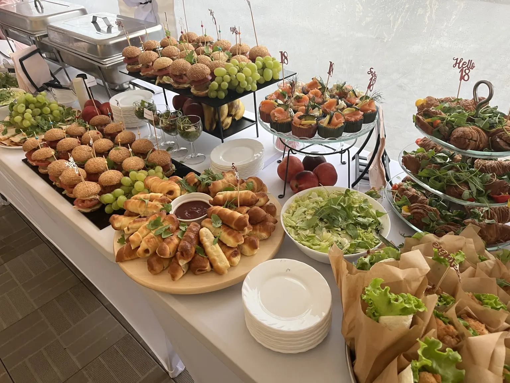
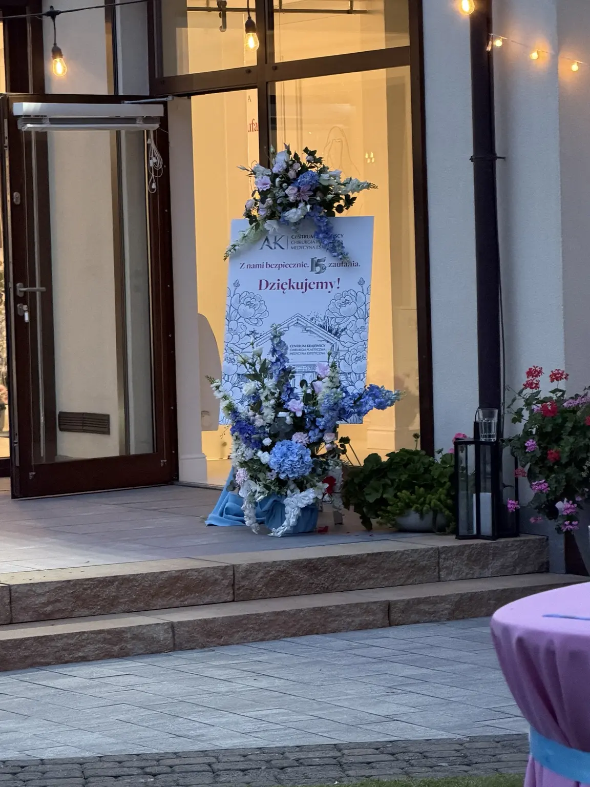
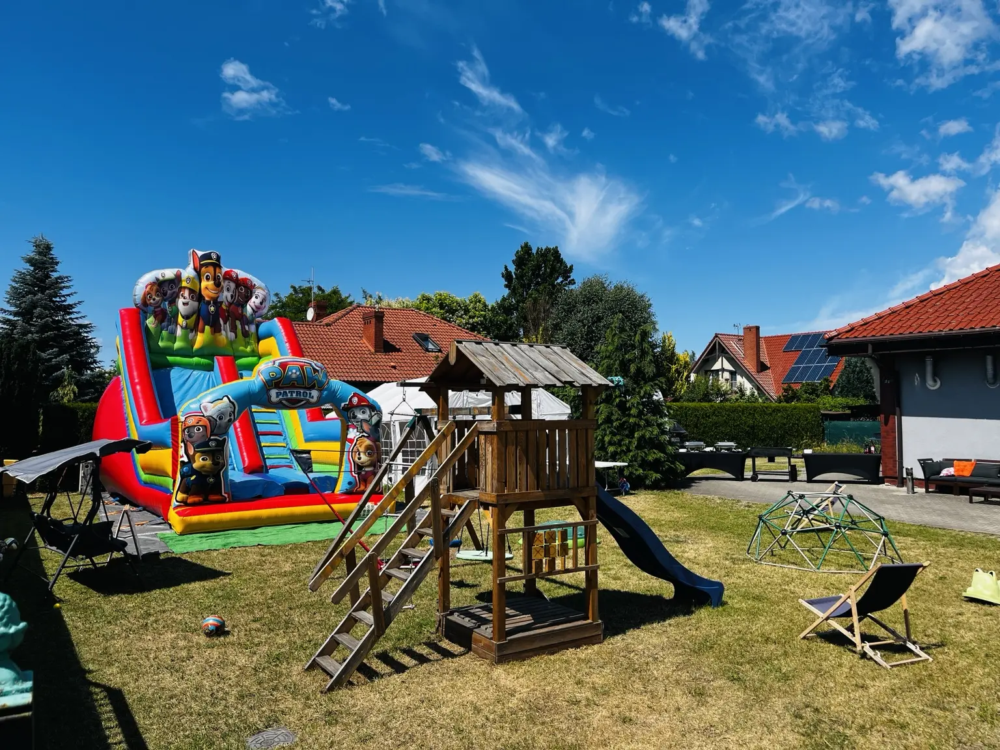
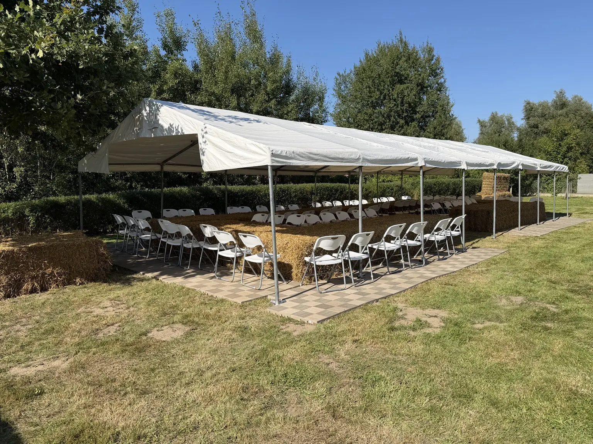

miejsc siedzących

Knajpka Rodzinna × Party Tent
Smak, przestrzeń i oprawa wydarzeń
Catering, kameralne przyjęcia, namioty i kompletne wyposażenie. Jedna odpowiedzialność, mniej stresu.
Dwie marki
Jedna odpowiedzialność.
Knajpka Rodzinna odpowiada za smak, menu i profesjonalną obsługę. PARTY TENT zapewnia namioty, stoły, krzesła, zastawę oraz kompletne wyposażenie pleneru.
Razem organizujemy przyjęcia rodzinne, eventy firmowe i imprezy pod namiotem — od pierwszych ustaleń aż po sprzątanie po wydarzeniu.

 Od kuchni po plener
Od kuchni po plener
Nasz lokal
Wygodna przestrzeń tylko dla Was
Kameralny, klimatyzowany lokal z ogrodem i zapleczem przygotowanym na rodzinne oraz firmowe spotkania.
Na wyłączność
Lokal wraz z całym terenem przyległym pozostaje do dyspozycji zaproszonych gości.
Ogród i odpoczynek
Miejsce do swobodnego odpoczynku i rozmów na świeżym powietrzu.
Plac zabaw
Przestrzeń dla dzieci, dzięki której najmłodsi goście również dobrze spędzą czas.
Darmowy parking
Wygodne, bezpłatne miejsca parkingowe dla gości przy lokalu.
Klimatyzacja
Komfortowa temperatura w sali niezależnie od pogody.
Obsługa kelnerska
Profesjonalny serwis dbający o sprawny i spokojny przebieg uroczystości.
W czym pomagamy
Wydarzenia dopięte na ostatni szczegół
W lokalu, w firmie albo w plenerze — dobieramy rozwiązanie do liczby gości, charakteru wydarzenia i miejsca.

01 / PRZYJĘCIA
Komunie i chrzciny
Kameralne uroczystości w Knajpce oraz przyjęcia w namiocie obok lokalu.

02 / CATERING
Firmy i instytucje
Śniadania biznesowe, przerwy kawowe, uroczyste obiady, wigilie firmowe i stypy.

03 / PLENER
Namioty i wyposażenie
Kompletna infrastruktura, transport, montaż oraz obsługa wydarzenia.
Wybrane realizacje
Doświadczenie, które widać
Obsługujemy rodzinne uroczystości, firmy, szkoły, instytucje i wydarzenia medialne.
Centrum Krajewscy
Pełne wyposażenie plenerowe oraz grill z obsługą podczas wydarzenia.
Od urzędu po szpitale
Obsługiwaliśmy m.in. Urząd Marszałkowski, szpitale Zdunowo i Zdroje oraz Pogotowie Ratunkowe w Szczecinie.
Super Rolnicy
Grill przygotowany dla uczestników programu emitowanego w TTV i TVN7.
Nasze realizacje
Prawdziwe wydarzenia. Prawdziwe emocje.




Opinie klientów
„Obsługa profesjonalna, punktualna. Dania pyszne.”
Opinia klientki na Facebooku
Zobacz profil i opinieZaplanujmy Twoje wydarzenie
Opowiedz nam, czego potrzebujesz. Przygotujemy dopasowaną propozycję.